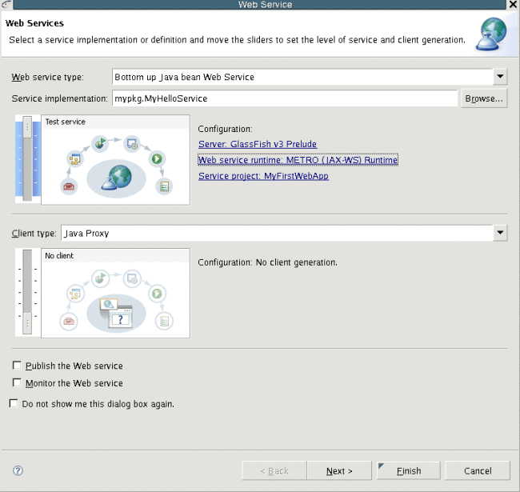
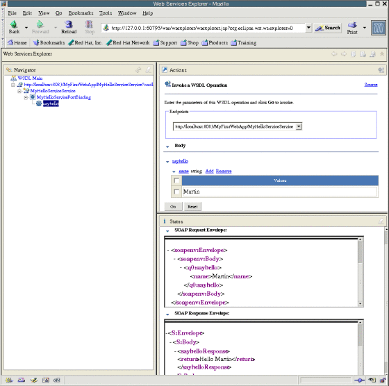
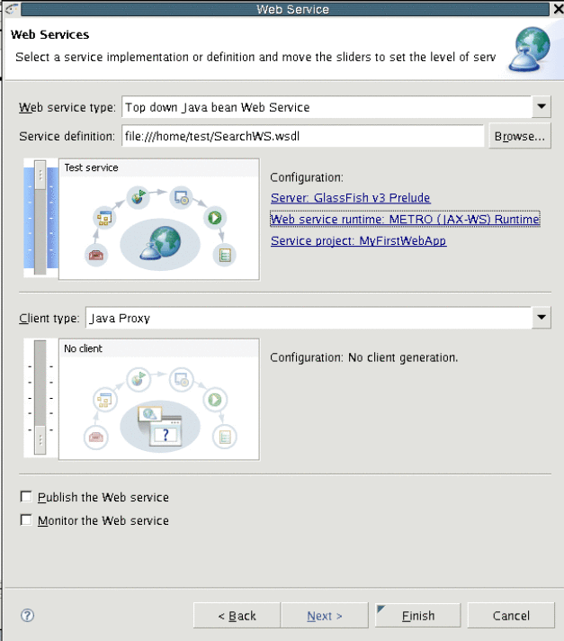
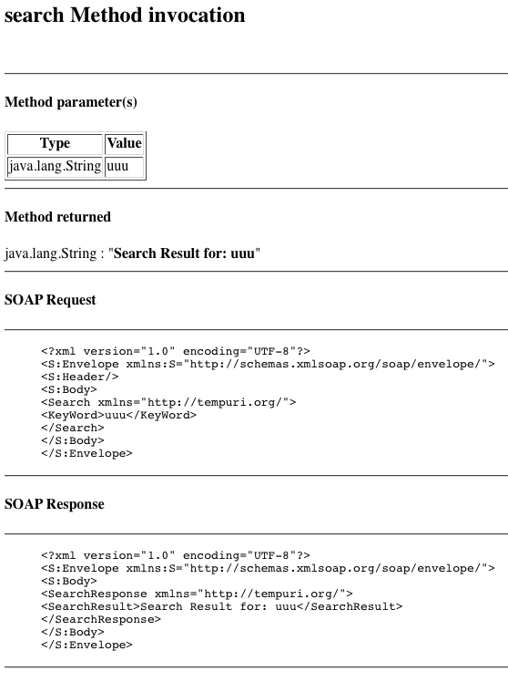
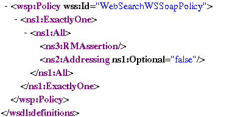
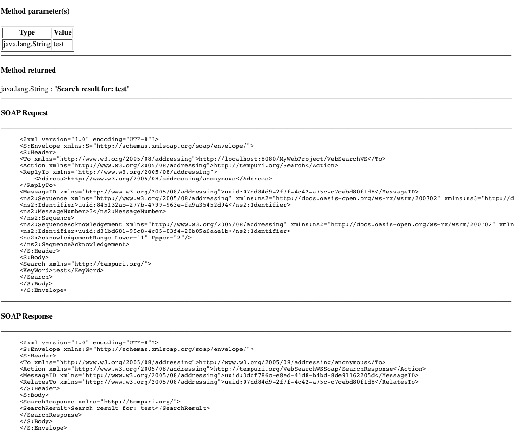

Chapter 5Getting started with Metro
Metro is a high-performance, extensible, easy-to-use Web Service stack that is a part
of GlassFish Server community. It offers core support for JAX-WS and optionally support
for additional features.
The GlassFish Tools Bundle for Eclipse 1.1 version includes Metro plug-in for Eclipse.
Developing Web Applications using Metro
This section of the document will help you get familiar with developing web
services applications with Metro using the Tools Bundle.
Install Metro on GlassFish Server
Before you can start developing web application with Metro for GlassFish Server, you
need to ensure Metro is installed on GlassFish Server.
While GlassFish v2.1 includes Metro, GlassFish v3 Prelude does not include the Metro
stack by default. You can install it as an Add-On package.
You can also update Metro version included with GlassFish Server v2 as described
in the following document:
https://metro.dev.java.net/1.4/docs/install.html
To install Metro for GlassFish Server v3 Prelude
Metro is available as an Add-On package from Update Center for GlassFish v3
Prelude. The following task describes the process of adding Metro stack to GlassFish
v3 Prelude.
- Stop GlassFish v3 Prelude Server.
- Start the Update Tool from <install-location>/glassfishv3prelude/bin directory.
- Click available Add-Ons.
- Select Metro Web Services for GlassFish.
Optionally you can also select Jersey Web Services.
- Click Install.
- Accept License Agreement.
Selected packages will be installed.
- Start the GlassFish v3 Prelude Server.
Note - You can also use the Update Tool from GlassFish Server Administration Console for
installing Metro packages. If you are using the Update Tool from GlassFish Administration
Console, make sure the GlassFish Server is running and the Administration Console is
installed.
To create a new Metro based Web Service
The following task describes the steps to create a web application and add
a web service to it.
- Create a new web application as described in To create a new Web Application project for GlassFish Server.
- From Project Explorer, right-click the web application project node and select New->Class
- In the New Java Class wizard, select mypkg as package name, and MyHelloService
as class name.
- Click Finish.
- In the Eclipse IDE, edit the java class file and enter the
following code snippet to create a method:
package mypkg;
public class MyHelloService {
public String sayhello(String name) {
return "Hello " + name;
}
}
- From the Project Explorer, select MyHelloService java class.
- Right-click the java class and select WebServices->Create Web Service.
- In the Service section, move the Service slider one level up to the
top, to enable Test Service stage.
- Click Web Service runtime entry.
- Select METRO Runtime in the dialog box.
- Click OK to close the dialog box.
Your configuration will look like this:

- Click Next.
Options screen is displayed. You can customize your options for:
The default options are set based on your target runtime platform.
- Click Next.
- Start the Server if necessary, depending on the state of Server.
- Enter your GlassFish Server admin login and password if requested.
- Click Launch, when presented with option to launch Web Service testing facility.
Browser opens page where you can test the web service.
- Click Finish to complete the wizard.
At this stage a web service has been created and deployed on the
server.
- Click sayHello link in the web page, and then click Add to add
the parameter value.
- Enter your name in the text field and click Go.
- The service will respond with Hello $YOUR_NAME message.
- Click Source link to see the SOAP communication.
The result shall look like this:

To create a new Metro based Web Service from WSDL
- Download this WSDL file and save it in a suitable location.
- Right-click the Web Project created in the previous task, in Project Explorer and
select New->Other.
- Browse the Web Services category and select Web Service from Menu.
- Click Next.
- Select Top down Java bean Web Service and click Browse to choose the WSDL file.
- Click OK to close the dialog box.
- Enter the direct file link to your WSDL file from the web
browser as follows:
file:///Users/admin/work/sources/eclipse/metro/docs/SearchWS.wsdl.
- Click Web Service runtime option and select METRO Runtime from the dialog box.
- Click OK.
Your configuration will look like this:

- Click Next.
- Accept the default options and click Next.
- Start the Server if necessary, depending on the state of Server.
- Enter your GlassFish Server admin login and password if requested.
- Click Finish to close the wizard.
The Web Service is created, but deployment to server fails, because implementation of
the service is missing.
- Click the error message (light-bulb icon) next to the compilation error, and choose
Add Unimplemented Methods.
- Implement the service method. An example Service method source is as follows:
package org.tempuri;
import javax.jws.*;
@WebService(wsdlLocation = "WEB-INF/wsdl/SearchWS.wsdl",
serviceName = "WebSearchWS",
portName = "WebSearchWSSoap",
endpointInterface = "org.tempuri.WebSearchWSSoap")
public class WebSearchWSSoapImpl implements org.tempuri.WebSearchWSSoap {
public String search(String keyWord) {
return "Search Result for: " + keyWord;
}
}
- Right-click the web project node, and select Run As ->Run On Server to
deploy the application.
- Visit the web service URL from browser.
For example:
http://localhost:8080/MyFirstWebApp/WebSearchWS?Tester
- Input a search string and click Search.
The result shall look like this:

Configure the Web Service Policies
- Browse the WSDL of the web service, in the project you created in
the previous task.
- Right-click it and select Web Services->WS-Policy Configuration.
WS-Policy configuration dialog box is opened.
- Select the Reliable Message Delivery checkbox and click OK to save the value
and close the dialog box.
- Deploy the project again (Run As->Run On Server)
- Visit the service URL from web browser.
For example:
http://localhost:8080/MyFirstWebApp/WebSearchWS?Tester
- Click the WSDL link to see the WSDL of the service.
Scroll down to see the policy definition:

- Go back to the Tester page in browser, input a search string in
the search box and click Search.
Notice the change in the soap communication:
